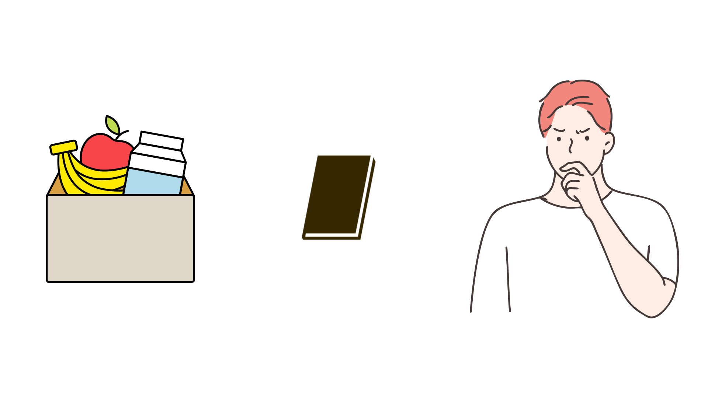

LRU 알고리즘이란?
LRU (Least Recently Used) 알고리즘은 메모리 공간을 전부 사용중일 때 어떤 데이터를 삭제하고 저장할 것인지를 결정하여 메모리 공간을 효율적으로
사용할 수 있게 하는 페이지 교체 알고리즘 중 하나입니다.
예를 들어 아래 그림과 같이 상자 안에 공간이 없는 상황에서 책을 넣어야할 때 상자 속의 어떤 물건을 빼고
책을 넣을지 결정하는 과정이라고 할 수 있습니다.

이같은 페이지 교체 알고리즘 중 LRU 알고리즘은 캐시에서 가장 오래 사용되지 않은 항목을 제거하는 알고리즘입니다.
노트북, 전공책, 테블릿 pc 중 가장 오랫동안 사용하지 않은 물건을 빼고 준비물을 넣는다는 것이죠!
현대 소프트웨어에서 LRU 알고리즘을 구현하는 방법은 스택, 카운터, 2차 기회 알고리즘이 있으며 각자의 장점과 단점을 가지고있습니다.
이 프로그램은 이 세 가지 방법을 통해 LRU 알고리즘이 진행되는 과정을 보여줍니다.